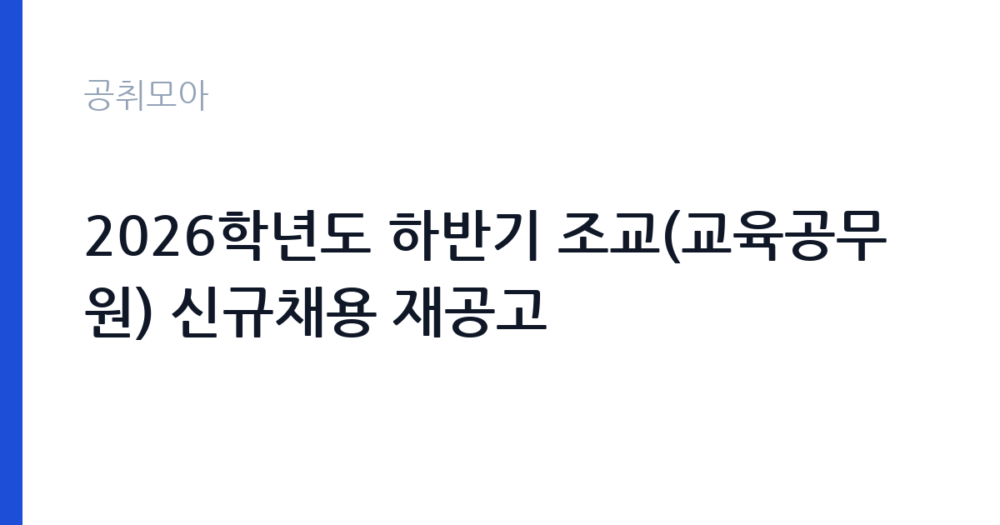

[국가기관] 2026학년도 하반기 조교(교육공무원) 신규채용 재공고
한국교원대학교 · 충북 · 마감 2026-10-08 (D-16) · 출처 나라일터

한눈에 보는 모집 조건
| 기관 | 한국교원대학교 |
|---|---|
| 공고명 | 2026학년도 하반기 조교(교육공무원) 신규채용 재공고 |
| 고용형태 | 정규직 |
| 근무지 | 충북 |
| 게시일 | 2026-09-22 |
| 마감일 | 2026-10-08 (D-16) |
지원자격, 이렇게 읽으세요
- 조교(교육공무원) 1명
- 접수 ~2026-10-08 마감
- 세부 조건은 원문 공고문 확인
채용 인원은 조교(교육공무원) 1명으로, 세부 자격요건은 첨부된 채용 공고문을 참고하시기 바랍니다. 대학 조교는 해당 분야의 석사학위 이상을 요구하는 것이 일반적이므로, 학위 요건을 먼저 확인하시기 바랍니다. 교육공무원 임용이므로 결격사유 등의 조건도 함께 살펴보시기 바랍니다. 재공고라 앞선 공고의 자격이 조정되었을 수 있으니 원문을 처음부터 읽어보시기 바랍니다.
이 공고의 포인트
첫 번째 포인트는 재공고라는 점입니다. 앞선 공고에서 적격자를 찾지 못해 문을 다시 연 것으로, 준비된 지원자에게 유리할 수 있습니다. 두 번째로 교육공무원 신분의 조교는 대학에서 교육과 연구를 지원하는 안정적인 자리입니다. 세 번째로 한국교원대학교는 교원양성의 중심 대학으로, 교육 분야 경력을 쌓기에 좋은 환경입니다. 해당 전공 석사 이상 학위자에게 적합한 공고입니다.
전형은 어떻게 진행되나
전형은 서류전형과 면접전형으로 진행되는 것이 일반적이며, 세부 일정은 첨부 공고문에서 확인하시기 바랍니다. 응시원서 접수는 9월 23일부터 10월 8일 18시까지로 약 2주간입니다. 지정된 기일까지 관련 서류를 제출해야 하므로 마감 시각을 지켜 접수하시기 바랍니다.
원문에서 확인한 전형 방식
한국교원대학교에서는 교육공무원(조교) 임용 후보자를 다음과 같이 공개 모집하오니, 희망자는 지정된 기일까지 관련 서류를 제출하여 주시기 바랍니다. 1. 채용인원: 조교(교육공무원) 1명 2. 공고기간: 2026. 9. 22.(화) ~ 2026. 10. 8.(목) 3. 응시원서접수: 2026. 9. 23.(수) ~ 2026. 10. 8.(목) 18:00 4. 담당부서(연락처): 교수지원과(043-230-3017) 5. 기타 사항은 첨부된 채용 공고문을 참고 바랍니다. 2026년 9월 22일 한국교원대학교총장
이런 분께 추천해요
- 해당 분야 석사 이상 학위를 보유하신 분
- 대학 교육·연구 지원 업무에 관심 있으신 분
- 충북 청주 근무가 가능하신 분
지원 전 체크리스트
- 조교 임용의 학위·전공 요건을 첨부 공고문에서 확인했습니다
- 응시원서 접수 마감(10월 8일 18시)을 확인했습니다
- 교육공무원 결격사유에 해당하지 않음을 확인했습니다
- 제출서류 목록을 공고문에서 확인했습니다
모집 일정과 제출 타이밍
공고 기간은 9월 22일부터 10월 8일까지이며, 원서 접수는 9월 23일부터 10월 8일 18시까지입니다. 접수 기간이 약 2주로 여유가 있으나, 학위증명서와 연구실적 정리에 시간이 걸릴 수 있으니 미리 시작하시기 바랍니다. 서류 합격자 발표와 면접 일정은 대학 안내에 따르시기 바랍니다.
직무 이해하기: 국가기관
대학 조교는 학과의 교육과정 운영 지원과 학생 지도 보조, 연구 지원 업무를 맡습니다. 한국교원대학교는 유아와 초등, 중등 교원을 양성하는 국립대학으로, 조교는 교원양성 교육의 현장에서 일하게 됩니다. 충북 청주에서 근무하며, 국가기관 카테고리 공고입니다. 조교는 수강 신청과 성적 관리, 실습과 임용 지원, 학과 행사 운영 등 학사 전반을 지원합니다. 교육대학원생과 학부생의 진로 상담을 돕는 역할도 맡을 수 있습니다.
자기소개서 작성 팁
지원서류에서는 학위 과정의 연구 내용과 교육 지원 경험을 구체적으로 기술하시기 바랍니다. 논문과 학회 발표, 강의·실습 지원 경험을 정리해 제시하시기 바랍니다. 교원양성이라는 대학의 사명에 대한 이해를 진정성 있게 서술하시기 바랍니다.
면접 준비 포인트
면접에서는 전공 분야의 전문성과 교육 지원 역량을 질문받을 가능성이 큽니다. 연구 내용을 알기 쉽게 설명할 수 있도록 정리해 두시기 바랍니다. 교육공무원으로서의 책임감과 학생 지도 철학을 함께 전달하시기 바랍니다.
급여·근무조건 읽는 법
보수 수준은 원문 공고문에서 확인하셔야 합니다. 교육공무원 조교의 봉급은 공무원보수규정에 따른 교육공무원 봉급표가 적용됩니다. 정확한 호봉과 수당 구성은 원문과 담당 부서(043-230-3017)를 통해 확인하시기 바랍니다.
자주 묻는 질문
- 조교(교육공무원)는 어떤 신분입니까
대학에서 교육과 연구 지원을 맡는 교육공무원입니다. 일반직과 다른 교육공무원 봉급과 인사 체계가 적용됩니다. - 재공고라 자격이 다릅니까
앞선 공고에서 적격자를 찾지 못해 다시 공고한 것으로, 자격요건이 조정되었을 수 있습니다. 첨부 공고문을 처음부터 다시 읽어보시기 바랍니다. - 접수 기간이 언제입니까
9월 23일부터 10월 8일 18시까지입니다. 지정된 기일까지 관련 서류를 제출하시기 바랍니다.
함께 보면 좋은 공고
[국가기관] 과학기술정보통신부 전문임기제 다급(과학기술 인력양성) 경력경쟁채용 재공고 — 마감 2026-10-06[국가기관] 육군교육사령부 한시임기제군무원(응급구조담당) 채용 — 마감 2026-10-06[국가기관] 2026년 제5회 식품의약품안전처 공무원(임기제) 경력경쟁채용시험 공고 — 마감 2026-10-06출처: 나라일터 공개정보를 바탕으로 공취모아가 정리한 안내글입니다. 모집 조건·일정은 변경될 수 있으니 지원 전 반드시 원문 공고문을 확인하세요. 본 글은 정보 제공용이며 합격을 보장하지 않습니다.